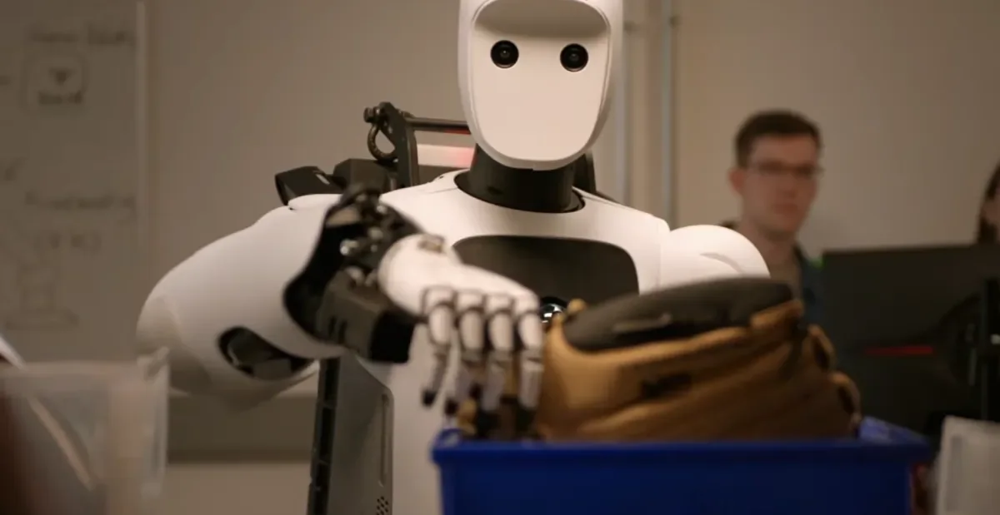
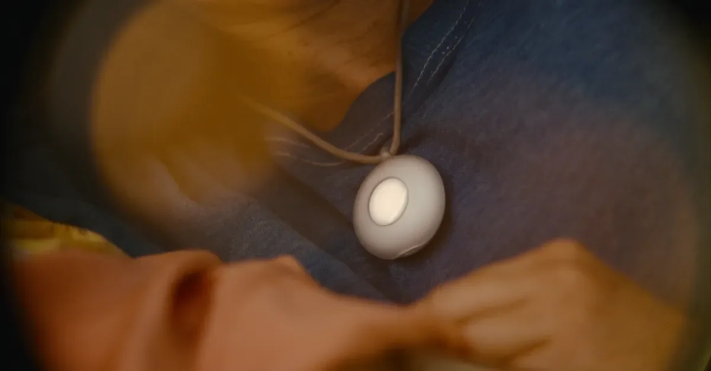
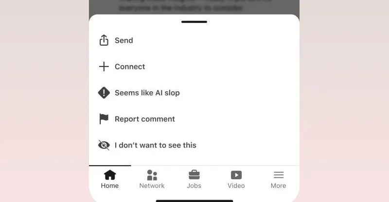

01
苹果暗示iCloud Plus推出AI高级档：算力成本终究要用户买单
Tim Cook在财报电话会上透露，苹果可能为重度AI用户提供付费iCloud Plus层级。
今天凌晨，苹果CEO Tim Cook在财报电话会上被问及AI功能成本时，没有直接回答，而是暗示未来可能会推出一个“针对AI重度用户的iCloud Plus层级”。这个表态很值得玩味。目前苹果的AI功能——比如相册智能搜索、Siri改进、文本生成——都免费包含在设备系统里。但云端AI推理需要大量算力，苹果显然不想一直自己扛着。对比来看，Google和微软早已对高级AI功能收费：Google One AI Premium每月相关金额，Microsoft Copilot Pro也是相关金额。苹果如果推出类似服务，价格大概率在相关数量到相关金额之间。技术门槛在于，苹果必须保证端侧AI和云端AI的无缝衔接，同时保护用户隐私——苹果一直强调AI处理在设备端完成，但复杂任务必然上云。成本方面，据估算，每个活跃AI用户每月云端推理成本约2到相关金额，苹果若收费，毛利率会很高。产业赢家是苹果服务业务，输家可能是那些希望AI永远免费的消费者。对普通人来说，如果你经常用苹果的AI功能，未来可能要掏钱了。行动建议：关注苹果秋季发布会，如果新iPhone的AI功能需要订阅，提前评估自己的使用频率。
伊恩的观察
苹果AI免费午餐可能结束，重度用户需准备为云端算力付费。
02
Google DeepMind发布Gemini Robotics 2：机器人学会全身控制
新AI模型能让机器人协调全身动作，完成复杂物理任务。

Google DeepMind今天发布了Gemini Robotics 2，一个能控制机器人全身的AI模型。之前的机器人AI大多只控制手臂或腿部，但Gemini Robotics 2可以同时协调全身——比如让机器人蹲下、转身、伸手抓取，就像人一样流畅。变化是什么？过去机器人需要为每个动作单独编程，现在AI通过视觉和语言指令直接生成全身运动序列。技术门槛在于实时性：模型必须在毫秒级内规划几十个关节的协同动作，同时保持平衡。DeepMind用了“视觉-语言-动作”联合训练，让模型理解“把杯子递给我”这样的指令并转化为物理动作。成本方面，训练这类模型需要大量机器人操作数据，DeepMind使用了合成数据和真实数据混合训练。产业赢家是制造、仓储、家庭服务机器人公司——比如波士顿动力、亚马逊机器人；输家是那些只做单一功能机械臂的公司。对普通人来说，未来5年内可能会看到能帮你做家务、搬东西的通用机器人。行动建议：关注机器人ETF或相关供应链公司，如传感器、电机厂商。
伊恩的观察
机器人从“专用工具”向“通用助手”迈进，全身控制是关键突破。
03
AI对冲基金Situational Awareness爆仓：450亿到100亿的教训
由24岁前OpenAI员工创立的AI主题对冲基金，一个月内资产缩水近八成。
今天科技圈最戏剧性的新闻来自金融领域：AI对冲基金Situational Awareness在一个月内资产从约450亿美元跌至约100亿美元，被迫将大部分持仓卖给Citadel。这个基金由24岁的前OpenAI员工创立，只有8名员工，其中4人是投资专业人士。它的重仓股包括Nebius Group、Sandisk、Micron和CoreWeave——都是AI基础设施相关股票。七月这些股票平均下跌超过35%，导致基金爆仓。变化是什么？之前AI概念股被疯狂追捧，现在市场开始质疑AI投资回报率。技术门槛在于，AI基础设施的资本开支巨大，但收入增长不及预期。成本方面，数据中心、GPU采购都是百亿美元级别，如果需求放缓，产能过剩风险很高。产业赢家是像Citadel这样低价收购资产的机构；输家是过度集中的AI主题基金和散户。对普通人来说，这个案例提醒：AI投资不是稳赚不赔，概念炒作终会回归理性。行动建议：分散投资，避免重仓单一AI概念股。
伊恩的观察
AI概念股泡沫破裂，集中持仓风险巨大，投资者需警惕。
04
Friend AI吊坠重新发布：加了个喇叭，价格翻倍
Friend推出新版AI吊坠，增加扬声器实现语音对话，售价249美元。

还记得去年那个主打“陪伴”的AI吊坠Friend吗？它今天重新发布了，新版本加了一个扬声器，可以主动跟你说话，价格也从之前的99美元涨到249美元。变化是什么？旧版Friend只能通过手机通知与你互动，像个沉默的日记；新版Friend内置扬声器和麦克风，可以像朋友一样随时聊天。技术门槛在于，在这么小的设备里集成扬声器、麦克风、电池和AI芯片，同时保证续航和音质，并不容易。成本方面，BOM（物料成本）估计从30美元涨到60美元左右，但价格翻倍更多是为了覆盖AI云服务费用。产业赢家是AI硬件初创公司，输家是那些认为“AI硬件=噱头”的怀疑论者——如果Friend能证明用户愿意为情感陪伴付费，会打开新市场。对普通人来说，249美元买一个能聊天的吊坠，性价比见仁见智。行动建议：如果你对AI陪伴感兴趣，可以等评测再决定，注意隐私政策。
伊恩的观察
AI硬件从“工具”转向“情感伴侣”，但高价能否持续存疑。
05
LinkedIn上线“疑似AI垃圾”举报按钮：平台终于动手了
LinkedIn新增举报选项，让用户标记疑似AI生成的低质量内容。

LinkedIn今天正式上线了一个新举报按钮：“Seems like AI slop”（疑似AI垃圾）。用户可以在信息流中标记那些看起来像AI生成的空洞帖子。这个功能并非突然出现——早在几周前就有媒体报道LinkedIn正在测试该功能，如今正式向所有用户开放。变化是什么？之前LinkedIn对AI内容没有专门标记机制，现在平台主动请用户帮忙识别。技术门槛在于，AI生成内容越来越逼真，靠算法自动识别很难，所以LinkedIn选择众包方式。成本方面，这个功能开发成本不高，但运营成本会增加——需要人工审核被举报的内容。产业赢家是内容质量高的创作者，输家是那些用AI批量生成“励志鸡汤”的账号。对普通人来说，你的信息流可能会干净一些。行动建议：如果你在LinkedIn上发帖，确保内容真实、有个人见解，避免使用AI生成套话。
伊恩的观察
平台开始反击AI垃圾内容，真实原创内容价值上升。
无障碍文字记录
伊恩 你好，欢迎收听「伊恩每日·科技」。今天是2026年7月31日。今天的新闻有一个共同的主题：AI 正在从实验室走进真实世界，而真实世界正在用价格、亏损和用户反馈来回应。苹果暗示要为 AI 功能收费，DeepMind 让机器人学会控制全身，一个 AI 对冲基金几乎清盘，AI 挂件 Friend 涨价回归，LinkedIn 则新增了一个举报按钮——举报‘这看起来像 AI 垃圾’。我们一个一个来看。
伊恩 今天聊一个信号：苹果正在把AI能力从免费增值转向付费增值。
7月31日，Tim Cook在一次采访中暗示，未来可能会推出一个更高价位的iCloud Plus订阅层，专门面向“AI重度用户”。目前iCloud Plus月费从0.99美元到9.99美元不等，提供存储和隐私功能。但苹果的AI功能——比如设备端的大模型推理、照片智能编辑、Siri深度理解——这些都需要持续的计算成本。目前的订阅模式覆盖不了。
变化是什么？苹果正在把AI能力从“免费增值”转向“付费增值”。这和之前传闻的Apple Intelligence订阅服务一脉相承。
技术门槛上，苹果的优势在于芯片和隐私架构。A系列和M系列芯片内置的神经网络引擎，加上私有云计算框架，让苹果能在设备端处理大部分AI任务，敏感数据不上云。但成本门槛在于：即便设备端推理，也需要更强的芯片和更大的内存；而复杂任务仍需调用云端算力。每次推理都消耗资源，苹果不可能永远自己扛。
产业赢家可能是提供AI算力的云服务商，比如亚马逊AWS、谷歌云，甚至苹果自己的数据中心供应商。输家则是那些试图靠免费AI吸引用户的安卓厂商——如果苹果能靠订阅模式持续投入，而安卓厂商只能靠广告或数据变现，体验差距可能拉大。
对普通人来说，这意味着你未来可能要每月多付5到10美元，才能用上苹果承诺的那些“智能”功能。这有点像iCloud存储从免费5GB到付费扩容的逻辑，但AI订阅的定价会更贵，因为算力成本远高于存储。
我的判断是：苹果此举是在为AI时代的商业模式探路。硬件利润趋薄，服务收入成为增长引擎。AI订阅如果成功，将巩固苹果的高端用户壁垒；如果失败，则可能让用户对“智能”功能产生付费疲劳。但无论如何，免费午餐结束了。
听众 那苹果的 AI 收费和其他家比，算贵吗？
伊恩 目前没有定价，但可以参考 OpenAI 的 ChatGPT Plus 是20美元/月。苹果如果定在5-10美元，其实不算贵，但问题是用户习惯了硬件溢价后服务免费，这个心理门槛可能比实际价格更高。
伊恩 今天，Google DeepMind 发布了 Gemini Robotics 2，一个能控制机器人全身的 AI 模型。这不再是实验室里的抓取演示——它能让机器人真正地“动起来”。
先看事实。DeepMind 今天在官网和多个科技媒体上同步公开了这个模型。Gemini Robotics 2 基于视觉语言模型，能够理解自然语言指令，比如“把桌上的杯子拿到厨房”，然后自主规划全身运动——行走、弯腰、转身、同时使用双臂。它不再像之前的机器人 AI 那样只能控制手臂或夹爪，而是实现了全身协调。
变化是什么？从“部分智能”到“全身智能”。过去的机器人，比如仓库里的机械臂，只能完成单一动作：抓取、放置。而全身控制意味着机器人可以像人一样，先走到桌前，弯腰，伸手，拿起杯子，再转身走回厨房。这听起来简单，但技术门槛极高。
难点在哪？全身协调需要实时处理大量传感器数据——摄像头、关节角度、力矩反馈——同时还要保持平衡，避免摔倒。DeepMind 的做法是构建一个“全身控制”框架，把视觉、语言和运动控制整合到同一个模型里。这意味着，机器人不再需要为每个动作单独编程，而是用自然语言描述任务，模型自动分解成关节指令。
代价是什么？训练这样的模型需要海量数据。DeepMind 用了模拟环境和真实机器人数据的结合，但计算成本依然很高。另外，模型的泛化能力——比如在从未见过的环境中能否正常工作——仍是挑战。目前 Gemini Robotics 2 主要在实验室和受控场景中测试，距离大规模商用还有距离。
产业赢家与输家。赢家是物流和制造业——亚马逊、DHL 这类公司，它们需要能在仓库里自由移动、搬运货物的机器人。输家可能是那些只做单一机械臂集成的公司，比如一些传统的工业机器人厂商，如果它们不能快速升级到全身智能，就会被淘汰。另外，家庭服务机器人市场也会被撬动——扫地机器人只能贴地，而全身机器人可以开门、拿东西。
对普通人来说，这意味着未来几年内，家庭服务机器人可能会真正“站起来”走路。你不再需要把东西放在机器人够得着的地方，而是可以像对一个人一样说：“帮我把沙发上的毯子拿过来。”当然，价格也会更高——初期可能超过 5000 美元，但随着规模化，成本会下降。
我的判断是：Gemini Robotics 2 是机器人从“工具”走向“伙伴”的关键一步。但别急着下单——从实验室到你家客厅，还需要 3 到 5 年。
伊恩 今天聊一个黑色幽默的故事。一个名叫“Situational Awareness”（情境感知）的AI对冲基金，几乎完全失去了情境感知。这个基金由一位24岁的前OpenAI员工创立，专门押注AI股票。今年7月初，管理资产高达450亿美元，现在只剩100亿——因为重仓的Nebius、Sandisk、Micron和CoreWeave，在7月份全部跌超35%。Citadel买走了它的大部分持股。
变化是什么？从AI造富神话到AI亏损现实。这个基金的失败不是偶然——它集中押注AI基础设施公司，也就是“卖铲子”的。但市场风向正在转变：从“卖铲子”转向“淘金者”。AI芯片和云服务的估值泡沫开始破裂，因为投资者意识到，资本支出巨大，但回报周期被严重高估。
技术门槛上，这些公司确实有护城河——比如Micron的HBM内存、CoreWeave的GPU云。但成本门槛在于，它们需要持续投入数百亿美元建数据中心，而客户（如OpenAI、Google）正在自研芯片，减少对外部供应商的依赖。当需求增速放缓，高杠杆的资本结构就会反噬。
产业赢家是谁？做空者，以及像Citadel这样低价接盘的对冲基金。输家是过度集中的AI主题基金和散户。对普通人来说，如果你持有AI相关股票或基金，这个案例是个警示：AI投资不是躺赢，技术壁垒不等于商业护城河。当所有人都挤在同一个赛道时，风险集中度可能比你想象的高得多。
伊恩 第四个故事是 AI 硬件。Friend 公司重新发布了它的 AI 挂件——一个小设备，挂在胸前，现在可以跟你对话。但价格从之前的99美元翻倍到249美元。这个设备最初定位是‘对抗孤独的 AI 伴侣’，但第一代因为没有扬声器，只能通过手机通知互动，体验很尴尬。新版本加入了扬声器，AI 可以主动说话。变化是什么？从‘默默陪伴’到‘主动聊天’。技术门槛不高——本质是一个带麦克风和扬声器的联网设备，AI 对话由云端大模型驱动。成本门槛在于订阅费——Friend 每月还要收10美元。产业赢家可能是那些能压低硬件成本的代工厂，输家是用户——因为249美元加月费，你完全可以买一台二手 iPad。对普通人来说，这个产品更像一个实验：人们是否愿意为‘AI 朋友’付费？从定价看，Friend 赌的是情感需求大于性价比。
听众 这个 Friend 挂件和之前的 Humane AI Pin 比，谁更靠谱？
伊恩 Humane AI Pin 定价699美元，功能更全但有屏幕和投影，结果因为过热和响应慢被广泛批评。Friend 功能单一，但专注情感陪伴，风险更低。不过两者都面临同一个问题：用户为什么需要多带一个设备？手机已经能做大部分事。
伊恩 LinkedIn 最近做了一个非常诚实的决定：在举报内容时，增加了一个选项叫“这看起来像 AI 垃圾”（seems like AI slop）。你没看错，这是官方翻译，原文就是“slop”，一个带有贬义的词。这个按钮不是玩笑，它已经在全球范围内上线。
先陈述事实。根据 The Verge 的报道，LinkedIn 的产品副总裁确认，用户反馈中排名第一的就是“太多 AI 生成的内容”。那些“我激动地宣布……”的鸡汤帖，很多都是 AI 写的。LinkedIn 的应对方式不是算法降权，而是直接给用户一个举报按钮，标签就是“AI slop”。
这个变化意味着什么？平台从“鼓励内容创作”转向了“过滤低质内容”。过去几年，LinkedIn 一直在推动用户多发文、多互动，结果 AI 工具让内容生产变得太容易，导致信息流里充满了模板化的“成功学”和“行业洞察”。现在，平台不得不承认，数量不等于质量。
技术门槛上，检测 AI 内容并不难。文本模式、发布频率、账号行为都可以建模。比如，一个账号每天发 10 条“我激动地宣布”，每条都带三个 emoji，这种模式很容易被识别。但成本门槛在于，误报可能会误伤真实用户。比如一个非母语者写的真诚分享，可能因为语法简单而被误判为 AI 内容。LinkedIn 采用用户举报而非全自动过滤，就是为了降低这种风险。
产业赢家是内容检测公司，比如那些提供 AI 文本识别 API 的厂商。输家是那些靠 AI 批量生产 LinkedIn 帖子的营销号——他们的流量来源会被切断。对普通人来说，这是一个信号：AI 内容已经到了让平台不得不干预的地步。但问题在于，这个按钮会不会被滥用？比如有人用它来举报竞争对手的合法内容。LinkedIn 表示会结合其他信号来审核，但具体效果还有待观察。
我的判断是，这个按钮更像一个姿态——LinkedIn 在告诉用户：“我们听到了你们的抱怨。”但真正的问题在于，平台如何平衡内容质量和用户活跃度。如果只是靠举报，而不改变推荐算法，AI 垃圾内容可能换个马甲继续出现。毕竟，检测和规避永远是一场猫鼠游戏。
听众 LinkedIn 能靠一个按钮解决 AI 垃圾吗？
伊恩 不能。按钮只是用户反馈机制，真正的防线是算法检测。但 LinkedIn 的动机是维护平台可信度，因为 B2B 社交的信任成本比娱乐平台更高。不过，AI 垃圾的生成成本几乎为零，而检测成本是持续的，这是一场军备竞赛。
伊恩 今天五个故事串起来，可以看到 AI 产业正在经历一个分水岭。苹果开始收费，说明 AI 的运营成本无法被硬件利润覆盖；DeepMind 的机器人进展表明 AI 正在从‘大脑’延伸到‘身体’；对冲基金巨亏则警示 AI 投资已从狂热进入清算期；Friend 涨价说明 AI 硬件仍在寻找产品市场匹配；LinkedIn 的反 AI 按钮则显示，AI 生成内容已经多到让平台不得不反击。赢家是那些能控制成本、提供真实价值的公司。输家是那些过度依赖 AI 概念、忽视商业本质的玩家。对普通人来说，AI 不再是遥远的未来，而是正在影响你的订阅账单、投资组合和社交媒体体验。
伊恩 以上就是今天的「伊恩每日·科技」。如果你对某个话题有更多疑问，欢迎留言。明天见。